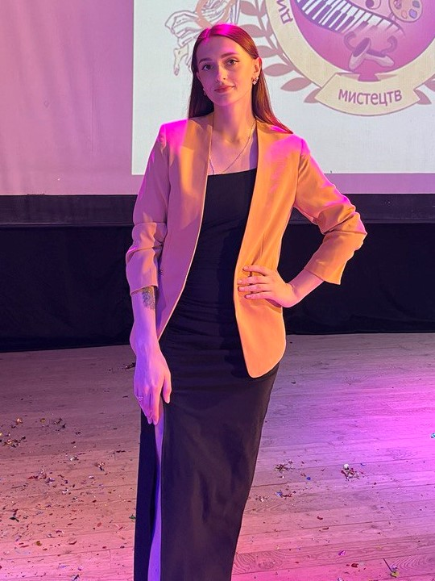
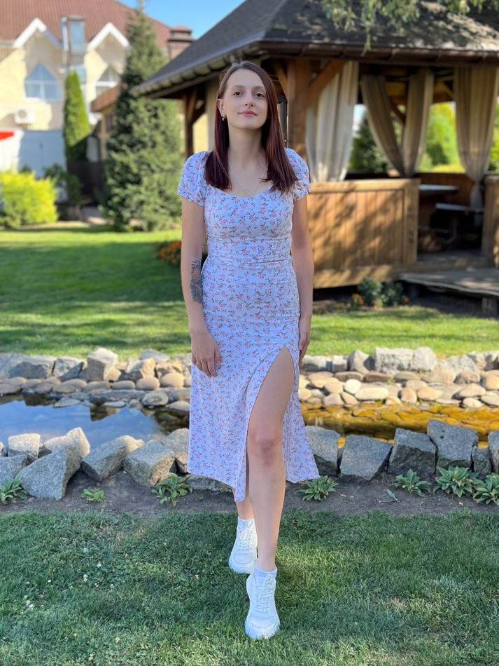
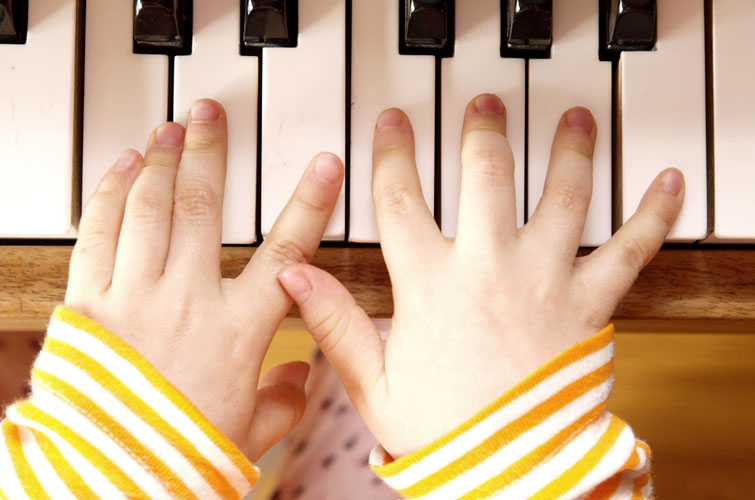
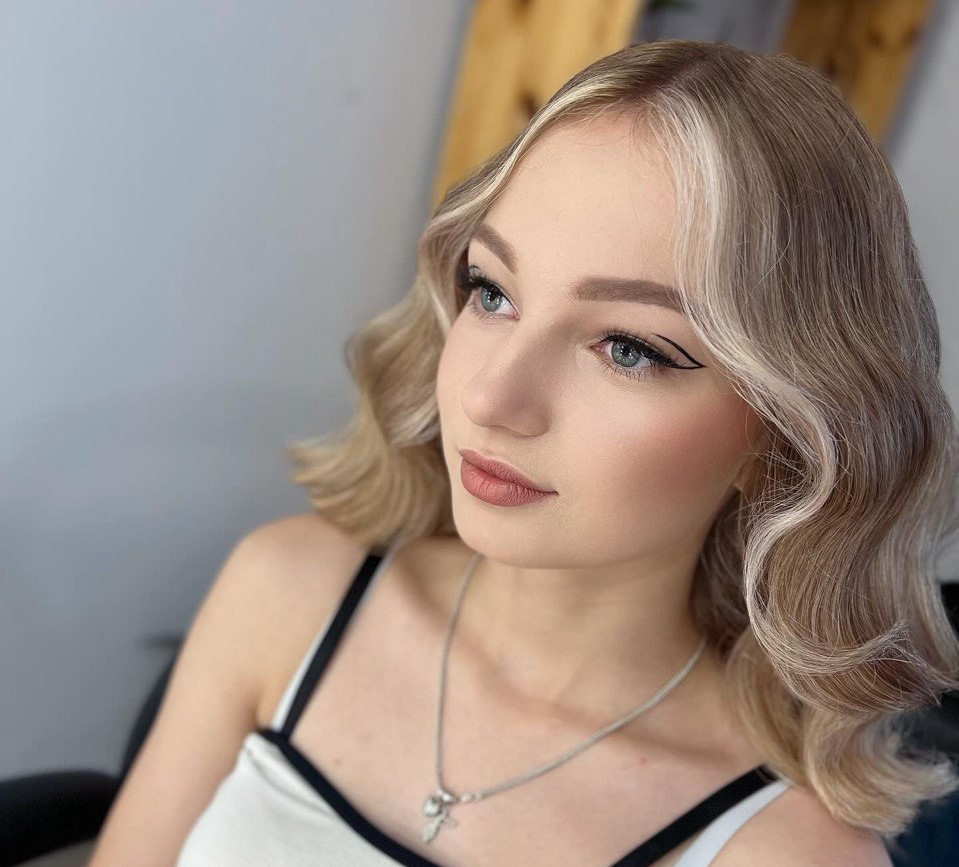
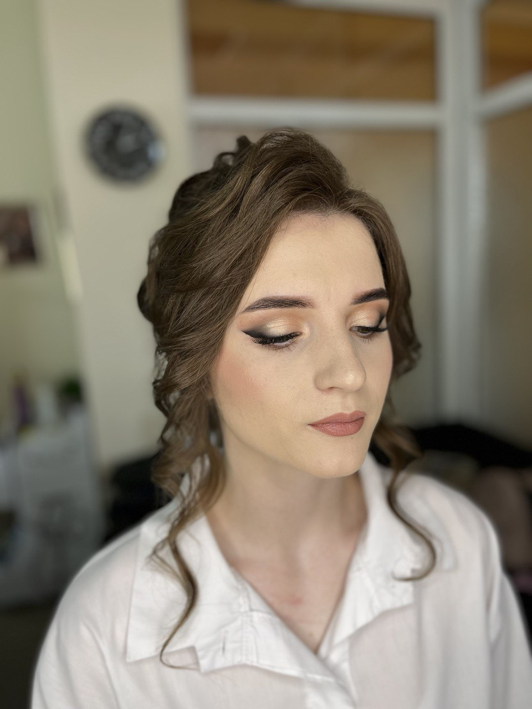

Інформація про мене
Звати мене Діана, мені 26. Навчалась в музичному коледжі на відділі фортепіано. Спочатку мріяла про консерваторію, але згодом зрозуміла, що занадто сильно боюсь виступати. Після закінчення, почала працювати в музичній школі викладачем. Так як дітей я дуже люблю, мені було легко працювати. Але хто хоч раз працював на державній роботі, зрозуміє моє бажання змінити професію.
 Моя робота
Вже 5 років я працюю в дитячій школі мистецтв. Робота з дітьми, на мою думку, одна з найважчих, але, в той же час, одна з найважливіших. Я обожнюю спілкуватися з дітьми, в них завжди є своє бачення на цей світ.
Моє хоббі
Ще в дитинстві я й сама ходила в школу мистецтв. Але окреме місце в моєму серці завжди займало малювання. Зараз в мене на це дуже мало вільного часу, але любов малювати вилилась в інше заняття. Чотири роки назад я пройшла курс візажиста, періодично роблю макіяж на замовлення.
 Висновок
Як висновок, хотіла б написати про те, що маю великі надії на цей курс, та і взагалі на подальше навчання в цій сфері.
P.S. Так як я більше ніде не змогла втулити нумерований список, я напишу що я люблю їсти/пити.
- Обожнюю червону рибу у будь яких варіаціях: суші, салати з рибою, запечену, бутерброди, і т.д.
- Усі види піци, головне щоб без цибулі.
- Пельмені, особливо з оцетом і меленим перцем, по іншому не їм.
- Між кавою і чаєм, завжди обираю каву.
- З алкоголю п'ю все, що не міцніше вина. Не бачу сенсу пити щось гірке і не смачне.
Ну і дякую за увагу!